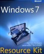
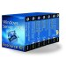
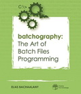
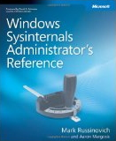
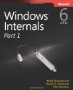
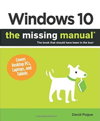
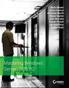

Windows 7/2008 Command Reference - Microsoft.com
Windows 2008/R2 Commands Help file - Microsoft.com
Old New Thing - Raymond Chen
Rob van der Woude.com - Batch files, VBS
CommandLine - Batch File examples and Utilities.
Timo Salmi - Useful script tricks and tips.
Many resource kit tools and utilities will run successfully on multiple versions of Windows. However Active Directory and NTFS have changed significantly over the years so I recommend you only use the tools supported for your platform.
 Windows 7 Resource Kit
By Mitch Tulloch, Tony Northrup & Jerry Honeycutt
1,700 pages, Deploy, Manage, Maintain and Troubleshoot. Example VBS and PowerShell scripts, sample chapter (PDF.)Windows 10 Remote Server Administration Tools (RSAT) KBase
Windows 2008/2012 Remote Server Administration Tools (RSAT) Built-in feature
WIndows 8.1 Remote Server Administration Tools (RSAT) KBase
Windows 8 Remote Server Administration Tools (RSAT) KBase
Windows 7 Remote Server Administration Tools (RSAT) KBase
RSAT includes Active Directory Domain Services Tools, elements of the RSAT package can be enabled under Control Panel | Programs and Features | Windows features. Windows Server 2008 Resource Kit - April 2008
By Microsoft Corp
4,000 pages + DVD with more than 200 essential tools and scripts.
Windows 10 - ISO download
N edition = No Media Player or IE DRM or Camera.
KN edition = KoreanWindows Assessment and Deployment Kit (Windows ADK) - Customize Windows 10 images for large-scale deployment.
Microsoft Deployment Toolkit (MDT) 2013 Update 2 [news] - Automate desktop and server OS deployments.
Sysinternals Suite - Download the Sysinternals utilities.
ADModify - A GUI tool to facilitate making bulk user attribute modifications.
Windows 7 /8 / 2008 / 2012 Assessment and Deployment Kit (ADK)
Windows 7 /8.1/ 2008 R2 /2012 Assessment and Deployment Kit (ADK update)Microsoft Application Compatibility Toolkit - Evaluate and mitigate application compatibility issues for Vista and Windows 7. Includes the Compatibility Administrator which can be used to set UAC exceptions (Application fix.)
Account Lockout Status (LockoutStatus.exe) - Display lockout information for a particular user account (Aug 2012).
Account Lockout and Management Tools - Includes LockoutStatus, plus tools to troubleshoot account lockouts, and display password ages(Aug 2012).
Microsoft Baseline Security Analyzer - Scan local and remote systems for missing security updates.
Elevation PowerToys for Windows Vista + Elevation blog
File Checksum Integrity Verifier (FCIV) - Compute and verify cryptographic hash values for files.
Policy Analyzer from Aaron Margosis - Compare sets of Group Policy Objects (GPOs). Highlight redundant settings or internal inconsistencies.
Group Policy Management Console SP1 & Group Policy Object Settings spreadsheet 2003/2008/2008R2/Win7
Local Administrator Password Solution (LAPS) - Manage local account passwords of domain joined computers (howto)
Remote Desktop Connection Manager - RDP to multiple machines.
Windows Help - Install Windows 7/8 Help, fix for 'Help not supported' errors.
UNIX Utilities - SDK - Windows Enterprise and Ultimate editions only (7/2008)
WMI Diagnosis Utility - Diagnose and repair problems with the WMI service.
Windows 2003 Administration Tools (adminpack.msi)- Remotely manage computers, for XP Professional and Server 2003. SP1 version (List), SP2 version (List) + supplemental 2003 R2 files
For Windows 7 and later: install the relevant Remote Server Administrative Tools (RSAT) package, see links above.
Windows 2003 Resource Kit (July 2005) + free download (List) includes an updated RoboCopy.
Windows XP Resource Kit (March 2005) Book plus the Administration Tools for XP/2003 Server.
Windows XP SP2 Support Tools (List) - This installer will not run on later OS's.
Windows 2000 Resource Kit Tools + Update. NT 4 ResKit + Update + Q234968.
 Batchography: The Art of Batch Files Programming
by Elias Bachaalany
Discover the lost art of Batch file programming, start with the basics of manipulating numbers, strings and variables and move on to looping operations, recursion, debugging and troubleshooting of your scripts. The final chapter has a number of batch file recipes: parsing .ini files, creating interactive menus and more. Highly recommended. SysInternals Administrator's Reference
by Mark E. Russinovich
Guidance and inside insights for the Windows Sysinternals tools. Guided by Sysinternals creator Mark Russinovich and Windows expert Aaron MargosisWindows 7 and Vista Guide to Scripting, Automation, and Command Line Tools
By Brian Knittel
A complete guide covering VBScript, traditional batch files, and PowerShell. Windows Internals, Part 1 and Part2
by Mark E. Russinovich, David A. Solomon and Alex Ionescu
Insider perspectives and hands-on experiments to demonstrate how Windows operates. Windows 10: The Missing Manual
by David Pogue
An enjoyable but still very detailed read with lot's of good tips and keyboard shortcuts.
 Mark Minasi's Mastering Windows Server 2012 R2
by Mark Minasi.
Comprehensive and understandable guide. Improve the performance and manageability of your network.
minasi.comWindows NT Shell Scripting
by Tim Hill.
First published in 1998 so no mention of VBS or Powershell, despite this it's still a solid introduction to writing batch files under Windows. Sample chapter.
Also see - Recommended VBScript Books
SysInternals - Microsoft System utilities.
Joeware.net - Admin, AD and Exchange tools.
Nirsoft Utilities and NirCMD freeware Command-Line Tool.Console 2 - Windows console emulator for CMD and/or PowerShell (review)
ConEmu-Maximus5 - Windows console emulator for CMD and/or PowerShell (review)
CommandLine.co.uk - Useful tools (free Win32 utilities - mostly console)
CryptoPrevent - A Group Policy to block executables from specific paths.
Cygwin - Linux-like environment for Windows, tutorial: 1, 2, 3
FastCopy - An alternative to RoboCopy.
Frank P. Westlake Batch Scripts + mirror of older console utilities.
Gow - Lightweight UNIX utilities compiled as native win32 binaries.
HoboCopy - open-source backup tool (can copy open files)
Jason Hood - Utilities including Search & Replace, Date/Time, ANSI escape recognition for CMD.
Npocmaka - Batch scripts, zipjs.bat + others
PDFtk - Command-line tool for processing PDFs
Petter Nordahl-Hagen - Offline Windows Password & Registry Editor
pretentiousname - Utilities by Leo Davidson
Repl.bat - FInd and Replace text, JScript/Batch script
FindRepl.bat - FInd and Replace text, JScript/Batch script
SetRes - Set screen resolution (Ian Sharpe)
Bill Stewart - Batch script and Windows admin tools (TrueLast LogonTime)
SetACL - Utility to manage permissions, auditing and ownership (free)
System Tools - Dump Event Log, Registry or Security info
unxutils - Port of unix utilities to run under the CMD shell
Chocolatey - Package manager for Windows
Ninite - Automate software installations and updates.
Agent Ransack - File Search (search all file types)
Autohotkey - Automate keystrokes, mouse clicks.
AutoIT - GUI scripting
CamStudio - Record screen and audio activity on your computer.
CPU-Z - gather information on system devices
Dban - Darik's Boot and Nuke, a boot CD that securely wipes hard disks.
Event Sentry - Event log monitoring
FTP - Cyberduck - FTP client
FTP - FileZilla - FTP client (safe download only via Ninite)
FTP - WinSCP - Free SFTP, SCP and FTP client for WindowsFind And Replace Text - Grep-like utility by Lionello Lunesu (Sourceforge link removed)
Flash uninstall - To allow a full 'clean' reinstall
FlashBlock - Content-filtering extension for Firefox
FileZilla - A cross-platform FTP, FTPS and SFTP client
Ghost Solution Suite - Disk / Partition Imaging
Inkscape - Vector Graphics (Illustrator)
imgburn.com - Free CD/DVD/Blu-ray burner
isoRecorder - Burn iso image to bootable CD
Krita - Open Source photo/graphics editor.
Lansweeper - Network Monitoring
Lost NT password
MakeMSI - Build Windows Installer files.
MalwareBytes - Anti Malware, detect and remove worms, Trojans, rootkits, etc.
Metapad - Simple notepad replacement
Notepad++ - Notepad replacement (n.b. the syntax highlighting for parentheses in CMD/BAT files is faulty.)
nLite - pre-installation Windows configuration
Trinity Rescue Kit - Recovery and repair of Windows machines
Netikus - Password, Ping, FTP, event log alerts.
Panda AntiVirus Free
PhotoRec - Data recovery software - hard disk, CD-ROM & Memory Cards
PuTTY - Free Telnet/SSH Client
Rapid Environment Editor - Edit environment variables
Servers Alive - Network monitoring
SoftPerfect - Search, Scan for open file shares and other utils.
Speccy - System information, hardware and software (serial numbers etc).
Start Menu add-ons for Windows 8/10: Classic Shell - StartMenu7
Sumatra - PDF viewer
SyncBack - GUI Backup and synchronize files
SyncToy - Synchronize files and folders
TeamViewer - Screen sharing/Remote control (Mac/PC/Linux)
TightVNC - Remote control
TribbleSoft - Easy Robocopy (GUI)
UnDelete - Condusiv/Diskeeper
USB install for Windows 7 - Copy iso images to a bootable USB stick
WinMerge - open source WinDiff
VirtualBox - Open Source virtualisation for Windows, Linux, Macintosh, and Solaris.
VirtualDub - Process/Edit .AVI files
Virtual PC - Virtualisation for Windows
VLC Media Player - Free versatile media player
VMWare - Free
VueScan - Scanner Software
WiNToBootic - Make bootable USB Flash or Hard Disk
WSUS Offline Update - Microsoft Windows/Office updates from a USB stick.
Wink - Capture screenshots/video, add help text
WsusOffline - Apply Windows Update patches without an internet connection.
Zero Assumption Recovery - data recoveryFind more utilities, or add you own over in the forum
Related
Usenet - news: alt.msdos.batch.nt
DosTips forum
The Scripting Guys Forum - a mix of VBScript, Batch and PowerShell.
SS64 - Windows CMD discussion Forum
“We have prided ourselves on always being the cheapest guy on the block. We have always told our people we're the high volume, low price guy in the software business" - Steve Ballmer (Partnering for Success)